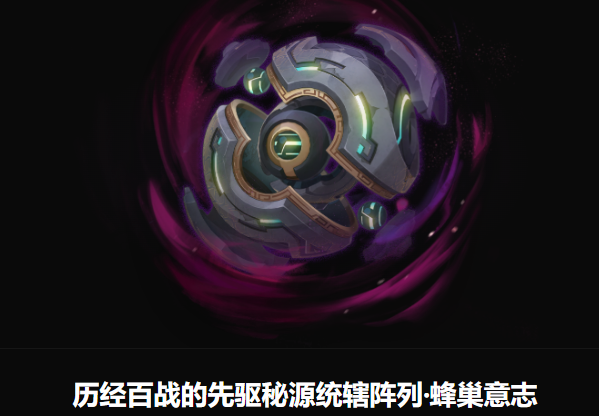

• 战斗开始时，铠殖会开启自身最大生命值70%的力场能量护罩（可以对其打出破盾），护盾存在期间，铠殖会持续获得水元素和雷元素的125%全抗性，并进行持续45s的蓄力，盾被击破后铠殖护罩破碎，露出弱点；
• 护盾存在期间每次受到破盾伤害时，护盾层数会-5%，护盾破碎后，对周遭释放毒雾，每隔10s自身损失当前10%血量，护罩破碎后获得40%易伤，护罩破碎期间受到破盾伤害会额外掉血，最多不超过本体最大生命值的40%；
• 每个铜铠的基础攻击水炮落点位于场地边缘，高度3m，受到超导引爆/超导化破盾时，将被直接损毁，损毁收回铜块时，每个被回收的铜块机关将会使铠殖获得12+6回收数量的水元素护盾；
• 在战斗中，强敌会多次切换进攻形态，频繁贴近近战。
【钢刃场·雷铠循环】：受到破盾伤害的铠殖阵列将会变更水元素护盾为雷元素护盾，拥有雷元素护盾的所有铜铠，攻击时转为雷元素破盾攻击，提升高额水元素与雷元素伤害的固有抗性，力场护盾被击破后解锁【破刃处决】，破刃处决命中后，铠殖的护盾直接清零，并根据破盾数值，吸收被处决目标的元素护盾；
【力场破铠斩】：满能量的力场护盾持续被击破时，铠力场破碎，撕裂自身马质与底盘，自身获得高额的破盾伤害加成，护盾存在期间，其护盾数值、层数均被锁定，均能进一步提高护盾破碎时的破盾伤害。
【爆铠狱火·冲阵铠兽】：大量铜铠被击破/阵亡状态后受到超导破化元素伤害时将掉落本体只为了辅助进行打盾的作战工作的机关，现在后续解锁了其设计初衷的召唤与驱使，其核心与铠殖已经绑定改写，每日的征战厮杀无数，每个铜铠阵亡后，都会被铠殖重新召唤。